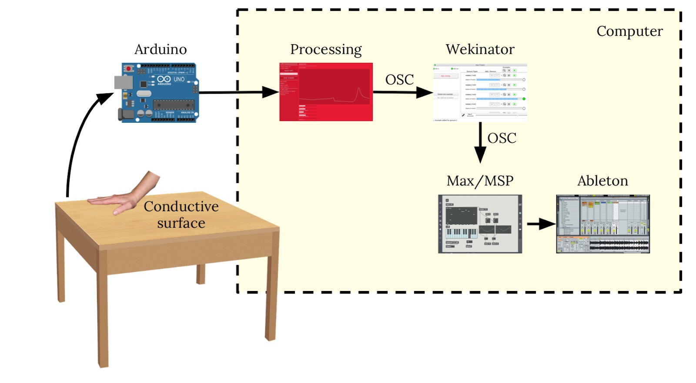
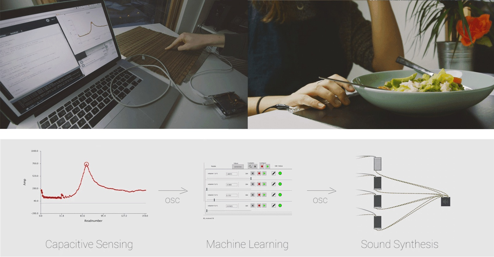
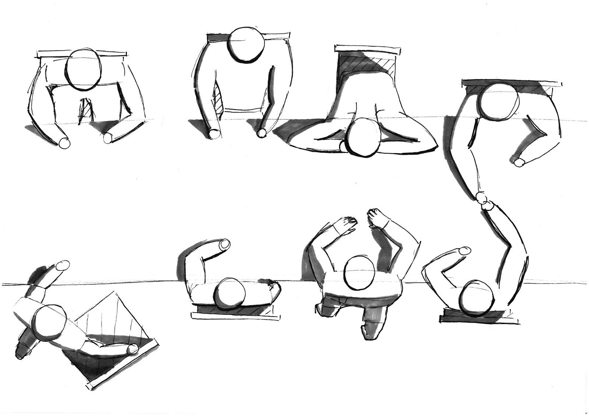

TAKT
A gesture-enabled sound surface
This projects involves exploring and prototyping a physical sound interface consisting of an advanced capacitive sensor on a surface controlled by touch gesture interactions. We went through a process of exploring materials, setting up the prototype, and defining a specific use case for the interface. We presented the interface in a “dining” context, where users sit at a table and music is triggered by the position of their bodies (mostly hands and arms) in relation to the surface. We discussed and explored what music mappings fit best in the interface and for this specific context. Finally, we suggested further applications and reflected on other uses and contexts for the interface.

Our final prototype consists of a wooden sushi placemat and a tinfoil sheet attached to it underneath. To exemplify our use case of the interface we filmed a video. Due to the tabletop setting, we decided to use the interface to control the music in a dinner setting. Specifically, a dinner between two people.
The capacitance data provided by the sensor is read via Serial communication in a Processing patch and then fed via OSC (Open Sound Control) to a recognition system (we used the software Wekinator) that will be previously trained to recognize different gestures or body actions occurring on the table. The recognition system decides what event has likely occurred and sends messages via OSC to a music interface that adapts a music track accordingly. The musical mapping takes place in Max/Msp and is connected to a digital audio workspace, specifically, Ableton, to introduce new tracks/samples and fade out others according to the mappings in the Max/Msp patch.
This project was designed and developed by Niek Bijman and Nadia Campo Woytuk.